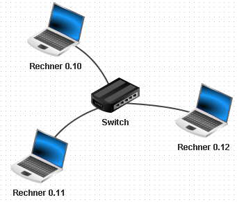
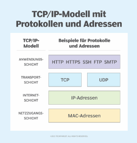

Netzwerktechnik mit Filius
Fragen:
- Weiterleitungstabellen (Aufgabe 22a/Seite 27 im Skript)
Basic Commands
ping 192.168.0.10: Testet die Erreichbarkeit eines Hosts im Netzwerk und misst die Antwortzeit.ipconfig: Zeigt die aktuelle IP-Konfiguration des Computers an, einschließlich IP-Adresse, Subnetzmaske und Standardgateway.
IP-Adressen
Echo-Server und Einfacher Client
Vermittlungsrechner
- verbindet verschiedene Netzwerke und leitet Datenpakete weiter.
- die Netzwerke müssen unterschiedliche IP-Adressbereiche haben. Also unterschiedliche Gateways.
Gateway
- Ein Gateway ist ein Knotenpunkt, der als Zugangspunkt zu einem anderen Netzwerk dient.
- Gatewayname ist meist die IP-Adresse des Routers im lokalen Netzwerk.
IP-Adresse: 192.168.0.10, Gateway: 192.168.0.1
DNS-Server
- Ein DNS-Server (Domain Name System) übersetzt Domainnamen (z.B. www.beispiel.de) in IP-Adressen
- Beispiel:
www.beispiel.dewird in192.168.0.10umgewandelt.
Modem
- über Modems kann man eine Verbindung über internet zu einem anderen Netzwerk mit Modem herstellen.
- Man kann es sich vereinfacht wie ein Kabel vorstellen, genau wie bei einem Kabel muss das Gateway auf beiden Seiten gleich sein.
- Falls man zum Beispiel in Filius eine Verbindung über ein Modem herstellen möchte, dass auf dem selben Rechner liegt, reicht
IP-Adresse: localhost
Peer-to-Peer (P2P)
 - Client-Rechner die im selben Netzwerk sind, können direkt miteinander kommunizieren. - Es wird kein Vermittlungsrechner benötigt. - In Filius können Peer-to-Peer Verbindungen über die Software Gnutella auf den Rchnern simuliert werden.
DHCP
- kurz für Dynamic Host Configuration Protocol
- Verteilt automatisch IP-Adressen an Geräte in einem Netzwerk.
- Praktisch in großen Netzwerken, die unübersichtlich werden können
- Verhindert IP-Adresskonflikte, da jede Adresse nur einmal vergeben wird.
- Start und Ende des IP-Adressbereichs wird im DHCP-Server festgelegt.
- Der Server hat dann als IP-Adresse z.B. den Startwert.
- Die anderen clients bekommen dann automatisch die aufsteigenden IP-Adresse aus dem Bereich zugewiesen.
Manuelles Routing
 - Routing über mehrere Vermittlungsrechner
- Filius gibt die Möglichkeit, Automatisches Routing zu aktivieren.
- Alternativ kann man auch Manuelles Routing verwenden.
- Dafür sind auf jedem Rechner die Routen zu den anderen Netzwerken einzeln einzutragen, in Weiterleitungstabellen dargestellt.
- Routing über mehrere Vermittlungsrechner
- Filius gibt die Möglichkeit, Automatisches Routing zu aktivieren.
- Alternativ kann man auch Manuelles Routing verwenden.
- Dafür sind auf jedem Rechner die Routen zu den anderen Netzwerken einzeln einzutragen, in Weiterleitungstabellen dargestellt.
Protokolle (ARP vs. ICMP vs. SMTP (Server u. Port) vs. TCP usw.)
Mail (POP3 etc.)
MAC
TCP/IP Modell hat OSI-Schicht-Modell abgelöst

Weitere Funktionen von Filius
- Eigene Software erstellen und einbinden
- Filius bietet die Möglichkeit, eigene Software zu programmieren und in die Simulation zu integrieren.
- Filius hält dafür einen Assistenten bereit, der bei der Erstellung und Einbindung eigener Software hilft.
Termine
03.11.-17.11. präsi vorbereiten 24.11. vorstellung 01.12. Aufgaben 08.12. Klausur